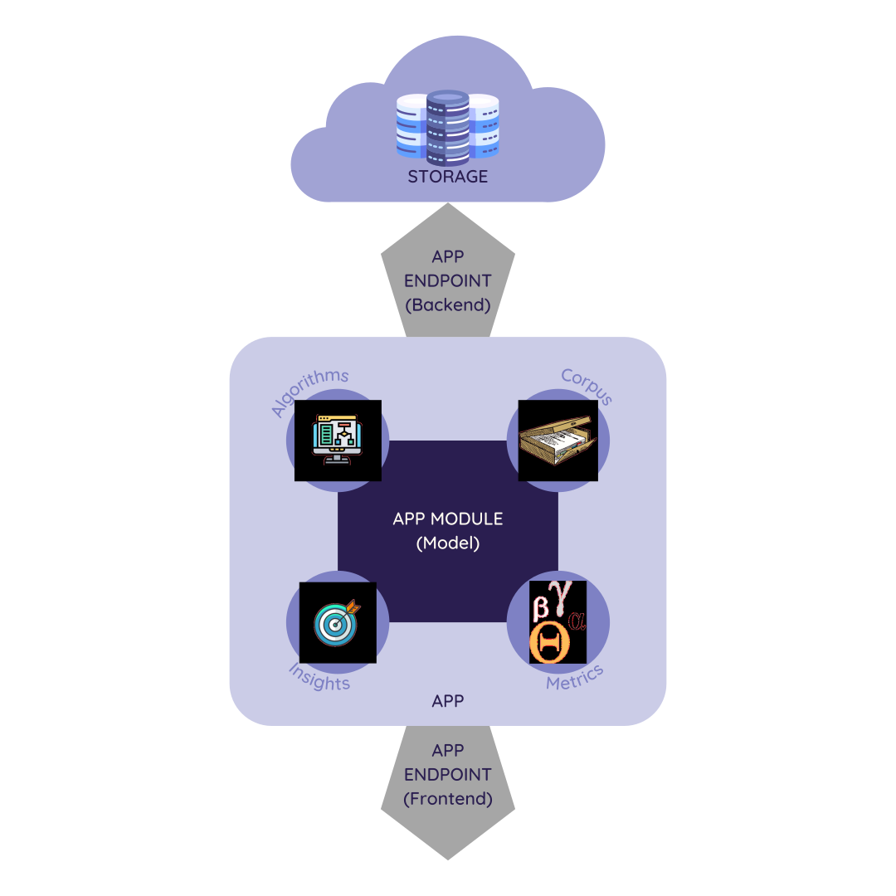
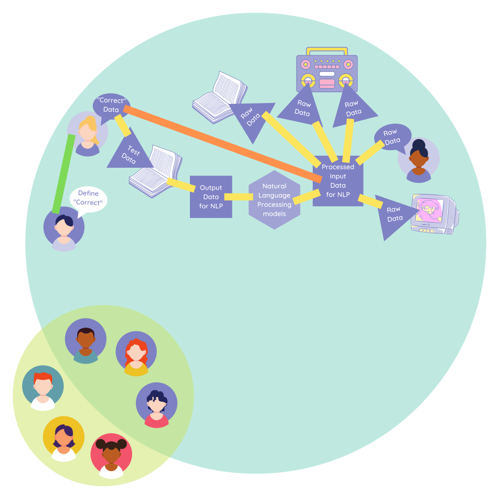
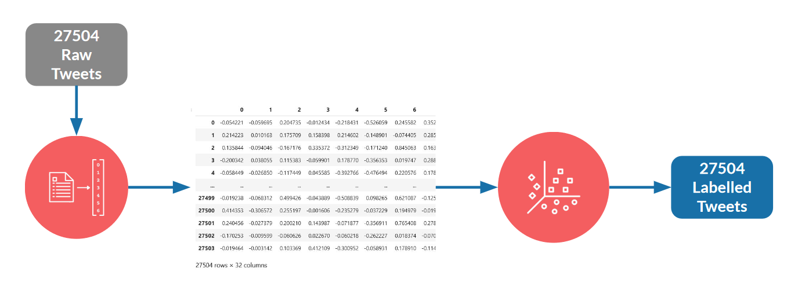
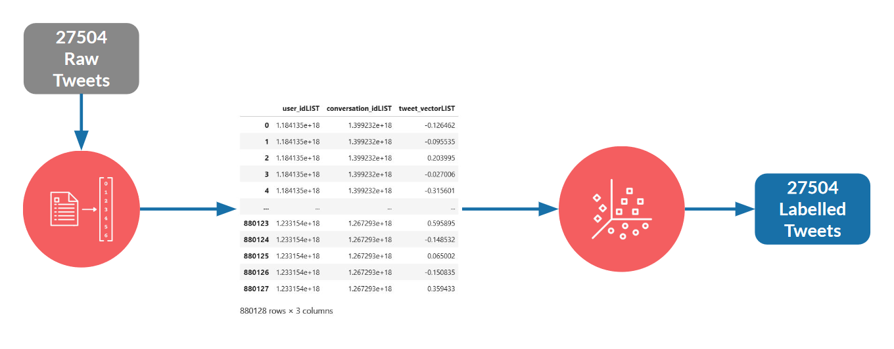
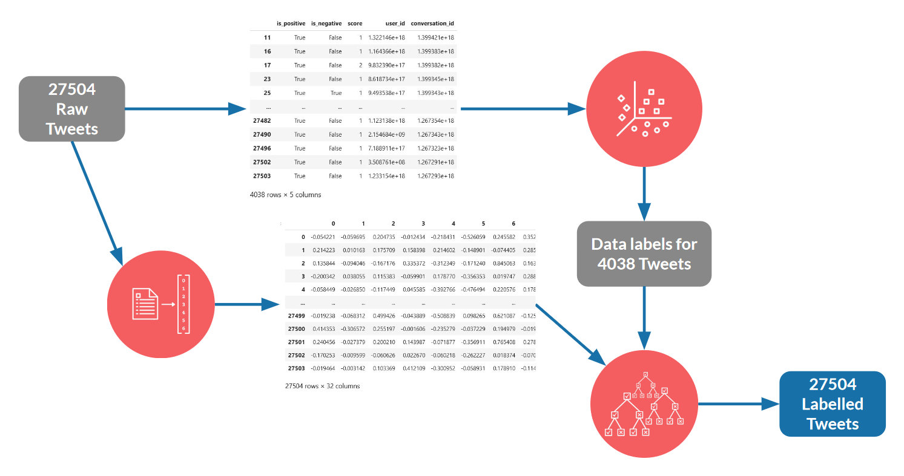
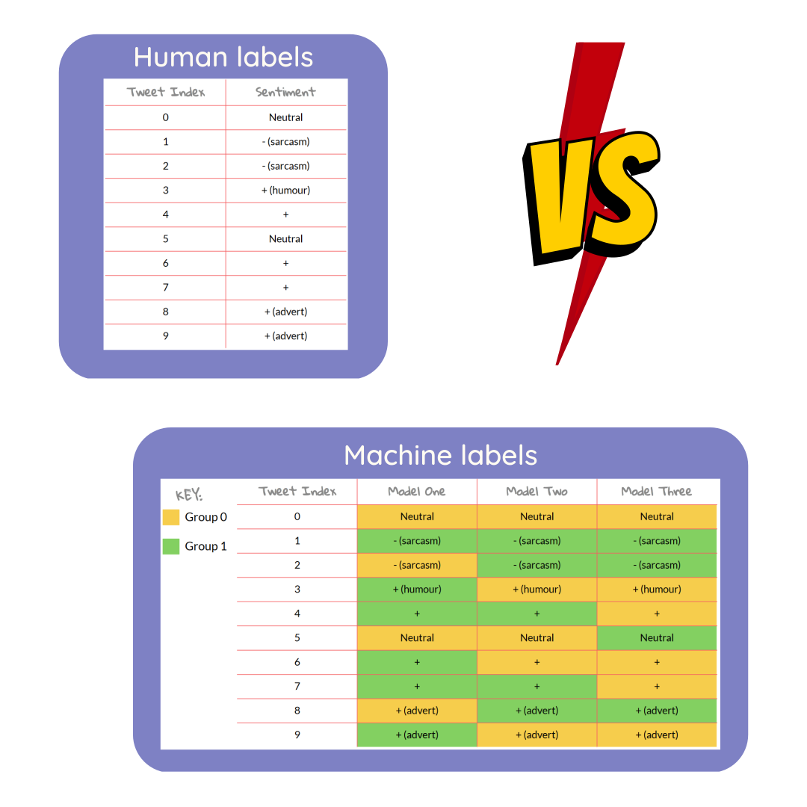
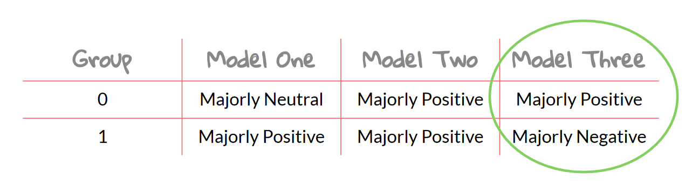

ML/Data Science article 6
Contents
ML/Data Science article 6#
Delivering Success in Natural Language Processing Projects: Part Five#
Publisher: Medium
Publishing Date: Oct 20, 2022
This is the final post of a five-part series where I aim to demystify Natural Language Processing (NLP) through a key learning tool that I would call the NLP toolbox. You can access the previous article here.
Up till now, we have covered 3 key sections of the NLP toolbox:
Tools for the problem
Tools for the data
Tools for the features
Now, let’s look at the final section: Tools for the model.
Modelling#
Simply put, modelling is a process of training the computer to look for patterns in data and testing how well the model predicted patterns in new data and solved the real-world problem.
From this, we see 4 qualities of a good model:
The model repeatedly runs because modelling is a cycle
The model is well-trained on diverse, objective-oriented data because modelling involves training
The model is great at spotting patterns and handling a variety of edge cases because modelling involves vigorously tested pattern-spotting ability
The model actually solves the problem in the real world (performing better than random chance) because modelling is a solution
With this perspective in mind, the model actually can be visualized as follows:

What the model actually requires to be a success.
This results in
The person for whom the model is built for — the target user — only cares about their questions being answered with relevant answers in the real world (the front of the app)
The team that maintains the model only focuses on the quality of the modelling data (through data validation and data relevance checks) and tracking errors and interpreting results as the product is in use
The team that maintains the IT infrastructure focuses on secure and timely delivery of the data to the modelling team and secure and timely delivery of modelling results to the end user
With that big picture in mind, the model becomes just as much about about the process and people as the actual model itself, like so:
With this perspective in mind, the model actually can be visualized as follows:

The NLP system accounting for all stakeholders.
There are 4 key tools addressing the model as visualized earlier:
Algorithms
Corpus (audio and/or text)
Insights
Metrics
Algorithms#
They are instrumental in so many sub-tasks in the final model that it is impossible to list them all. As said in the previous article, there are a number of deep learning models such as
TF-IDF
LDA
PV-DM
PV-DBOW
BERT etc.
There are also a couple of models based on statistics like
Logistic Regression (great when the dependent variable is a categorical variable)
Poisson Regression (great when features are count data and the variance and mean are almost identical)
Negative Binomial Regression (also great when features are count data and the variance and mean greatly differ)
As also discussed previously, it is advisable to combine programmatic and manual data cleaning — this implies that you will have more than one model and you may need to combine both deep learning and statistical models to get optimal performance and interpretability/explainability in the final composite model.
Corpus#
When it comes to the corpus, all the things discussed on data exploration and feature engineering apply. Just to recap some relevant points,
Ensure data quality by establishing processes to constantly ensure data provenance and lineage through data versioning
Automate the data flow with good data pipelines
Consistently perform data augmentation e.g. refreshing the model every time the data changes to feed new data into the training dataset and produce relevant results
Consider data sources and data feeding into the modelling module — a batch loading of data will require a very different IT infrastructure from a model involving stream loading of data
Have SMEs sit with the modelling team to ensure that data is obtained with user consent, it preserves user privacy and it is relevant to the non-technical end user and non-technical team within the organization
Also, split all data that is coming into the system randomly into a training dataset, a testing dataset and a validation dataset.
Insights#
It can be very easy when designing a NLP system to focus only on metrics; however insights for the non-technical organizational team and end user must also be given serious consideration.
Some inspiration for insights include:
What are some unexpected results during modelling?
What are the ramifications of the model findings for real-world stakeholders?
What is the data story telling the relevant stakeholders?
If the audience is technical, what use cases would work for this type of NLP solution?
How much money would deploying this model in the real-world generate or save? (If in the business world)
How many people, households and communities would be impacted if this model enters the real world? (If in the NGO world)
Metrics#
When evaluating the performance of your models of choice,
For deep learning models: utilize SHAP values to inform hyperparameter tuning, also testing different models on the same task to identify the type of model that would do well on a particular task
For statistical models: utilize hypothesis tests and also test different models, each with a different combination of independent variables to identify the most statistically feasible model
Hypothesis tests in particular can check for all sorts of things including:
Cointegration of the model (if using hybrid models such as MIMIC and/or your data is a panel of time series data)
Heterogeneity within a particular numerical variable split based on given categories
Statistical significance of the model parameters
Statistical significance of the model
A statistically feasible model is one that
passes the statistical significance of the model test
has the lowest score on a particular goodness of fit statistics (these include Bayesian Information Criterion, Akaike Information Criterion, R squared, Root Mean Squared Error etc.)
Error visualization, bench-marking against baseline dataset+results, human review ratings — go hand in hand with these more “traditional” ways of evaluating model performance.
Evaluating Supervised Machine Learning
When there is labelled data available and the task is classification of 2 categories, error analysis for can be done where there is systematic tracking of various metrics such as:
The number of false positives
The number of false negatives
The number of true positives
The number of true negatives
The accuracy
The precision
The recall
The F1 score etc.
However, in many cases, the categorical label will have more than one category; in this case, multi-class classification algorithms such as
XG Boost
CatBoost
K-means
Support Vector Machines etc.
can be helpful, having mainly two methods of evaluation:
Human review “marking” model results
Use of SHAP values, accuracy and/or precision (more numerical types of metrics)
Evaluating Unsupervised Machine Learning
In this case, we need more sophisticated error analysis that is predominantly end user focused. Human review and user behaviour would “label” the data and results would be evaluated on
Fairness
Human vs. algorithm accuracy
User consent
Organizational project objectives etc.
How would Modelling look like in a real-world project?#
When selective models for my Delta Analytics teaching fellowship project, I knew that they had to solve 3 key tasks:
Vocabulary building — as mentioned in the previous article, the tweets definitely had more than one language; sometimes someone would misspell an English word for emphasis
Programmatic encoding of the dataset to represent it in a different form from the manually encoded, labelled data ()
Data labelling — 4,038 tweets with sentiment were labelled based on manually engineered features; these labels would need to help label the remaining part of the dataset.
Based on these tasks,
PM-DM (Doc2Vec algorithm in Gensim) could be used for vocabulary building and programmatic encoding
K-Means could be used for programmatic data encoding and unsupervised data labelling
XG Boost could be used for supervised data labelling
There were 3 composite models being evaluated:

Model one: Using only 1 form of the data (programmatically encoded) with PV-DM and K-Means algorithms, completely unsupervised.

Model two: Using only 1 form of the data (manually encoded) with PV-DM and K-Means algorithms, completely unsupervised.

Model three: Using 2 forms of the data (manually and programmatically encoded) with XG Boost, PV-DM and K-Means algorithms, partially supervised.
How were the results evaluated?
XG Boost was executed in a stratified manner, where sections of the model were trained and tested, with the accuracy result being used to evaluate the performance of the model; it’s accuracy in classifying 3 classes of sentiment (positive, negative and neutral) was 62.70% by the 10th data batch.
Human review of the first 10 tweets was done for each composite model.
The human evaluation results were as follows:

Human labels as the benchmark, compared to machine labelling results.
Based on the results, a summary table was created, with the third model being selected, like so:

Summary table: it shows Model 3 labels sentiment best.
Some of the modelling insights were as follows:
Adverts used popular hashtags not as intended
Few Swahili and Sheng encoded words were found in the dataset
The sentiment of most tweets was neutral
Each time the models are re-run, the groupings for 2/3 approaches change except the sample classifications in the third approach, even after setting a random seed
3 use cases were identified for this solution in local media houses, NGOs and businesses.
Further Resources
If you enjoyed this article, you will be sure to love the introduction to this series. Enjoy!
As we come to the end of this series, feel free to let me know in the comments below, any takeaways you got from the series and add your perspective — I look forward to learning from you!